CURIOSIDADES SOBRE ANIMAIS BRASILEIROS
Bem-vindo à nossa página de curiosidades sobre o fascinante mundo dos animais! Aqui, você vai descobrir fatos incríveis sobre diferentes espécies, suas adaptações surpreendentes, comportamentos únicos e o papel vital que desempenham na natureza. Prepare-se para se surpreender com histórias de sobrevivência, inteligência e as mais variadas formas de vida que tornam o reino animal tão diverso e emocionante. Explore e encante-se com o que a natureza tem de mais curioso!
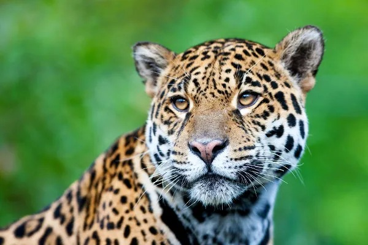
Onça-pintada
Panthera onca
A onça-pintada é o maior felino do continente americano, podendo chegar a 135 kg. É um animal robusto, com grande força muscular, sendo a potência de sua mordida considerada a maior dentre os felinos de todo o mundo. Suas presas naturais são animais silvestres como catetos, capivaras, jacarés, queixadas, veados e tatus.
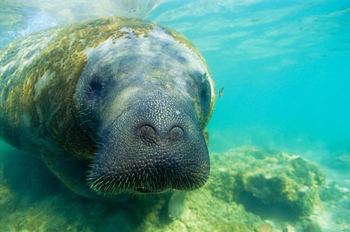
Peixe-boi
Trichechus inunguis
O peixe-boi é um mamífero herbívoro – ou seja, se alimenta apenas de algas, aguapés e capim aquático. Mas de plantinha em plantinha, o peixe-boi chega a pesar 300kg e a medir 2,5m. Ele se alimenta principalmente na época chuvosa, quando há mais disponibilidade de plantas.
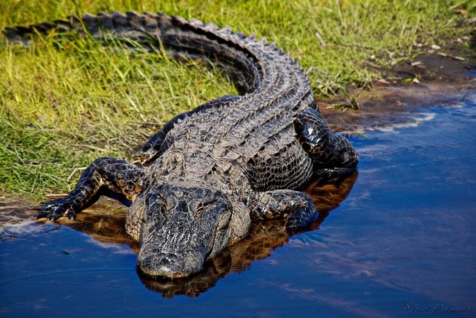
Jacaré-açu
Melanosuchus niger
O jacaré-açu é uma espécie de jacaré exclusiva da América do Sul. Ele é um predador de topo de cadeia alimentar. Exemplares adultos de grandes dimensões podem predar qualquer animal de seu habitat, inclusive outros predadores de topo, como pumas, onças, jiboias e sucuris, se forem surpreendidos por esses répteis.
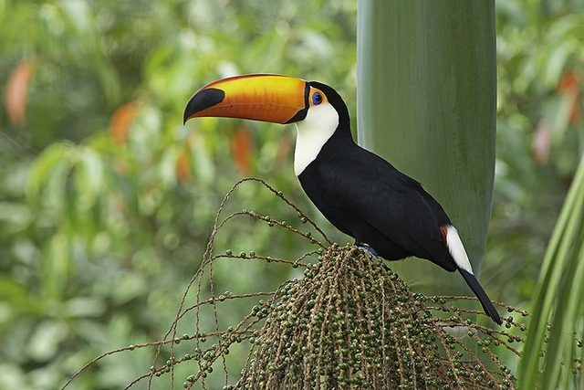
Tucano-toco
Ramphastos toco
O nome científico dos tucanos significa ave de bico grande como uma espada que faz seu ninho no oco/ toco (toco). É o maior dos tucanos, vivendo em todo o Brasil central, em partes da Amazônia e na América do Sul. Esses animais se alimentam, principalmente, de frutos.
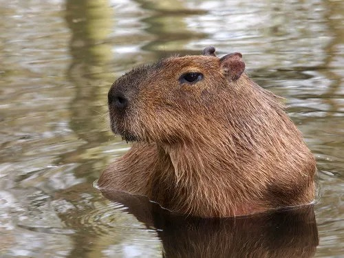
Capivara
Hydrochoerus hydrochaeris
Capivara é um mamífero herbívoro que se destaca por ser o maior roedor vivente, podendo atingir até 100 kg. Apresenta hábito semiaquático, sendo encontrada em áreas associadas a cursos de água, onde se protege de predadores e se reproduz. Vivem em grupos de até 20 indivíduos.
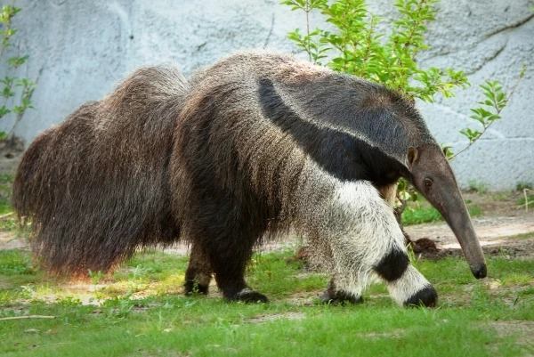
Tamanduá-bandeira
Myrmecophaga tridactyla
O Tamanduá-bandeira mede cerca de 2,20 metros, pesa até 45kg, tem uma cauda grande e com pelos grossos e compridos e um focinho longo. Ele usa suas garras dianteiras para escavar vários formigueiros e cupinzeiros ao longo do dia para capturar até 30 mil formigas e cupins.
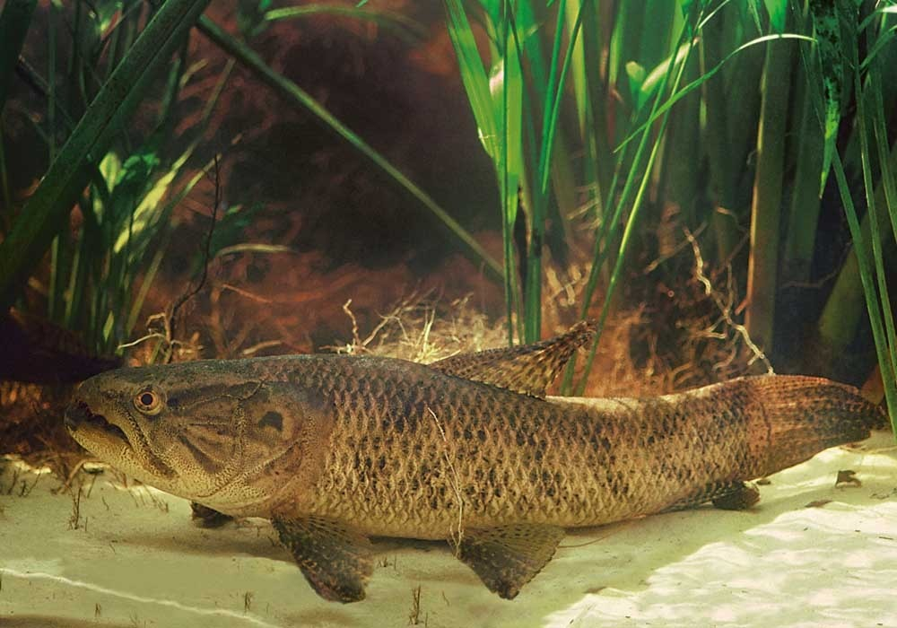
Traíra
Hoplias spp
A Traíra é um peixe carnívoro, alimentando-se de pequenos peixes, rãs e insetos. Espera a presa imóvel, junto ao fundo de lama ou em locas de pedras, desferindo um bote rápido e fatal. Na época da reprodução, as traíras se reúnem em casais e preparam o lugar da desova.
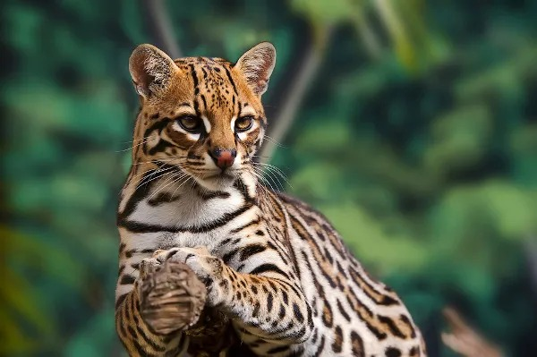
Jaguatirica
Leopardus pardalis
Jaguatiricas são animais mamíferos de médio porte que apresentam ampla distribuição geográfica. Possuem pelagem amarelada com manchas em rosetas abertas e formando listras. São animais solitários e territoriais, além de habilidosos para subir em árvores, saltar e nadar.
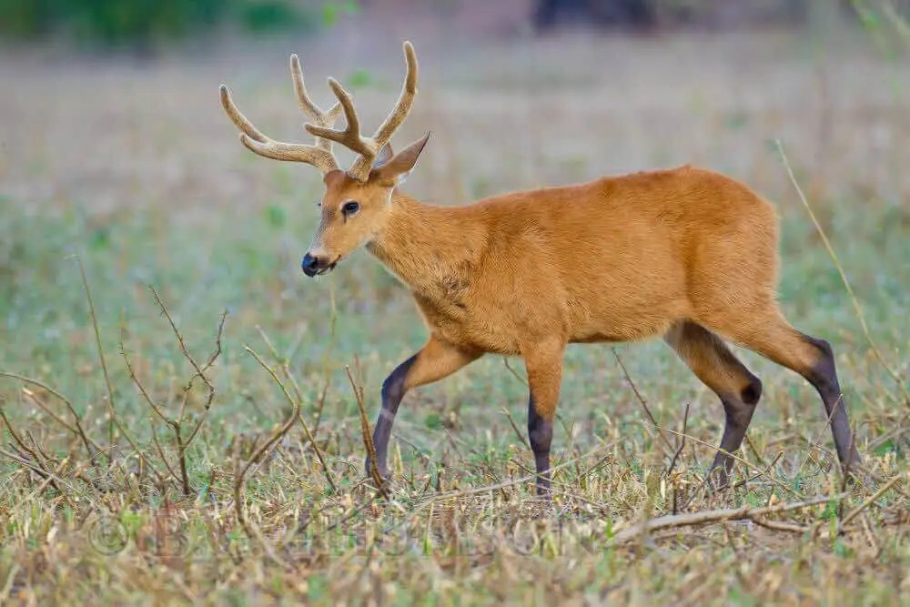
Cervo-do-pantanal
Blastocerus dichotomus
O cervo-do-pantanal é o maior cervídeo da América do Sul, medindo entre 1,2 e 1,3 metros e podendo pesar até 140 kg. Os machos são maiores do que as fêmeas e possuem uma galhada na cabeça que se desenvolve na época da reprodução.
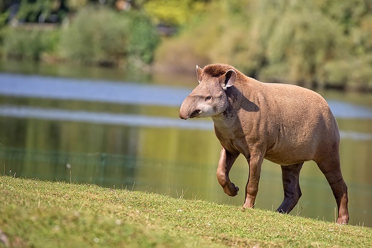
Anta
Tapirus terrestris
A anta o maior mamífero terrestre do Brasil e o segundo da América do Sul, tendo até 300 quilos de peso e 242 centímetros de comprimento, com patas curtas, cabeça grande e focinho em forma de tromba móvel. Possuem uma dieta frugívora e papel importante na dispersão de sementes.
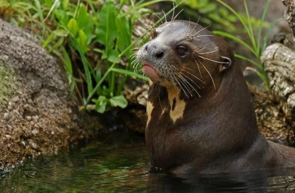
Ariranha
Pteronura brasiliensis
Ariranha é um animal mamífero de hábito semiaquático, sendo também conhecida como onça d'água e lontra-gigante. Esse animal é social e monogâmico, bem como carnívoro. Para se locomover na água, conta com uma longa cauda achatada e membranas interdigitais.
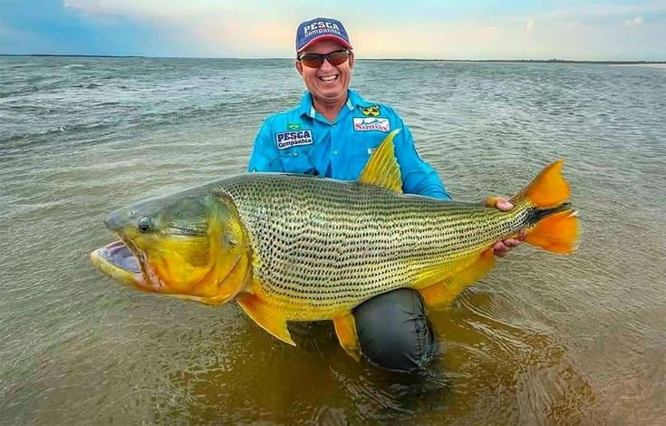
Dourado
Salminus brasiliensis
O Dourado, conhecido como o “Rei do Rio”, possui uma coloração dourada por todo o corpo, com reflexos avermelhados. O peixe apresenta hábitos diurnos e carnívoros, sendo um predador de topo de cadeia, orientado visualmente.
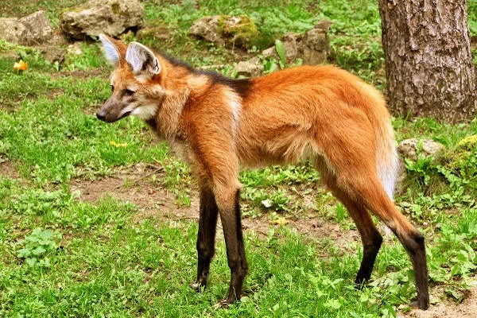
Lobo-guará
Chrysocyon brachyurus
O lobo-guará, também conhecido como lobo-de-crina, lobo-vermelho, aguará e aguaraçu, é o maior canídeo da América do Sul. Esse mamífero destaca-se por seus membros longos e finos e pela coloração dos seus pelos, que são laranja-avermelhados em grande parte do seu corpo.
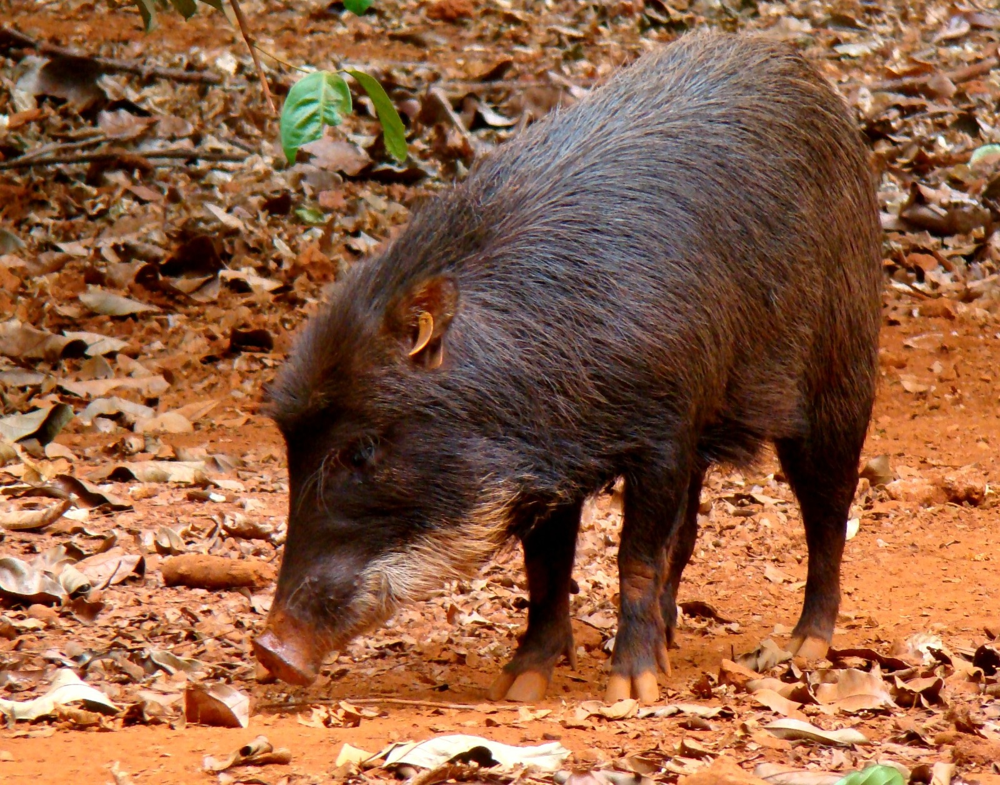
Queixada
Tayassu pecari
As queixadas são mamíferos pertencentes à família Tayassuidae que apresentam como características mais marcantes o topete e o bater característico dos dentes. Conhecidos também como porco-do-mato, esses animais podem ser encontrados em grupos de 50 a 300 indivíduos.
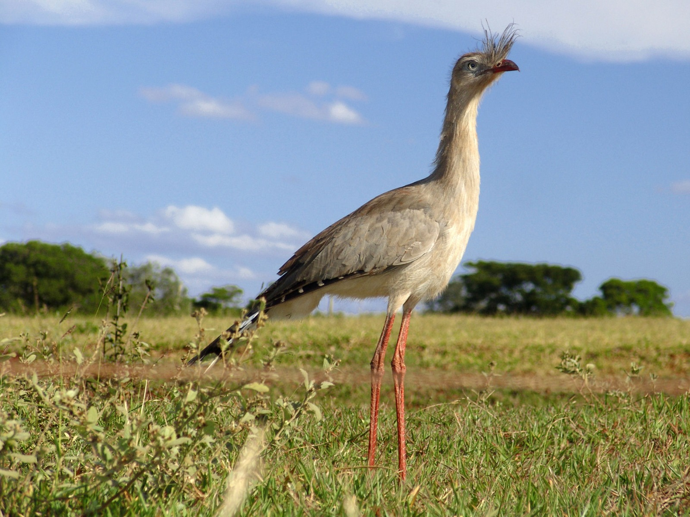
Seriema
Cariamidae
Conhecida também como seriema-de-pé-vermelho. Ave símbolo do Estado de Minas Gerais. Ave típica dos cerrados do Brasil, a seriema possui porte imponente e cauda longa.
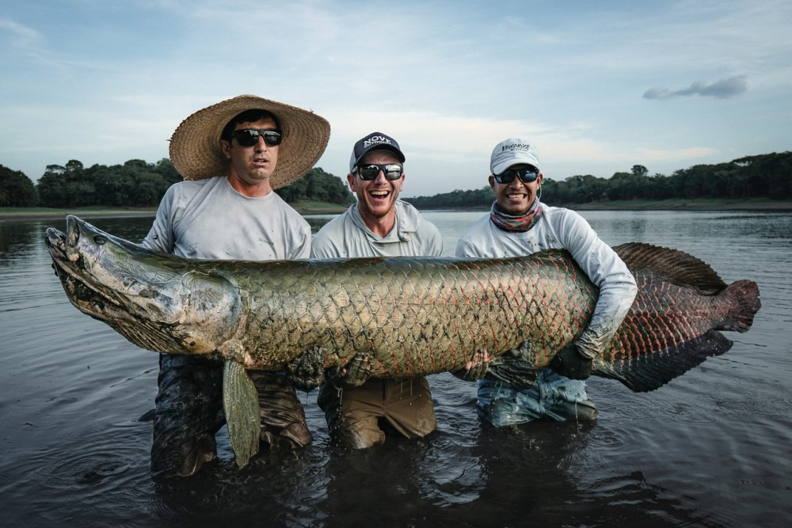
Pirarucu
Arapaima gigas
Pirarucu é peixe encontrado geralmente na bacia Amazônica, mais especificamente nas áreas de várzea, onde as águas são mais calmas. Costuma viver em lagos e rios de águas claras, não sendo encontrado em zona de fortes correntezas.
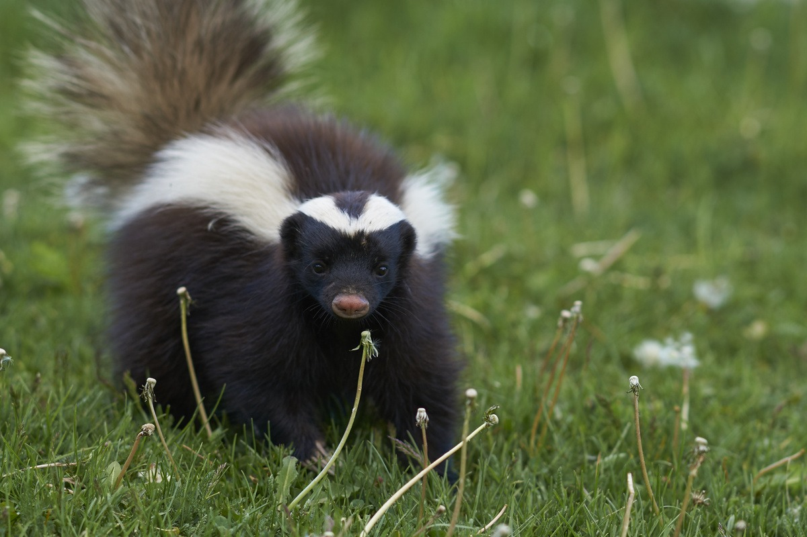
Zorrilho
Conepatus chinga
O Zorrilho é um pequeno mamífero carnívoro. É solitário e apresenta hábitos noturnos. Se alimenta principalmente de artrópodes e frutos. É capaz de produzir e expelir uma substância extremamente fétida com efeitos tóxicos quando em alta concentração.
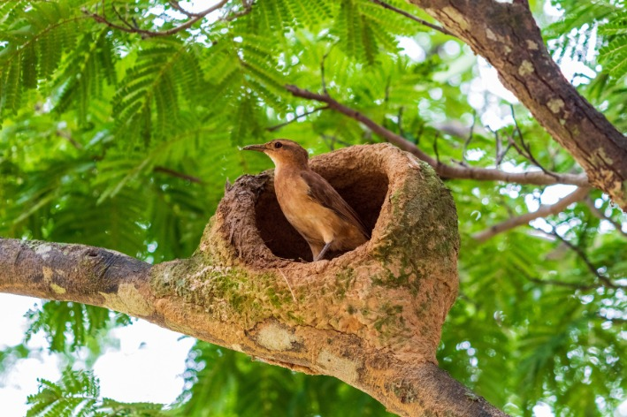
João-de-barro
Furnarius rufus
O João-de-barro é conhecido por seu característico ninho de barro em forma de forno. É tido como passarinho trabalhador e inteligente. Seu canto parece uma gargalhada e dizem que ele faz o ninho na direção contrária à da chuva.
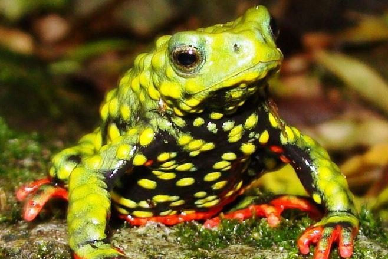
Sapinho-admirável-de-barriga-vermelha
Melanophryniscus admirabilis
O sapinho-admirável-de-barriga-vermelha é uma espécie de anfíbio da família Bufonidae. Foi oficialmente descrito pela ciência apenas em 2006, em um trabalho publicado por pesquisadores locais.
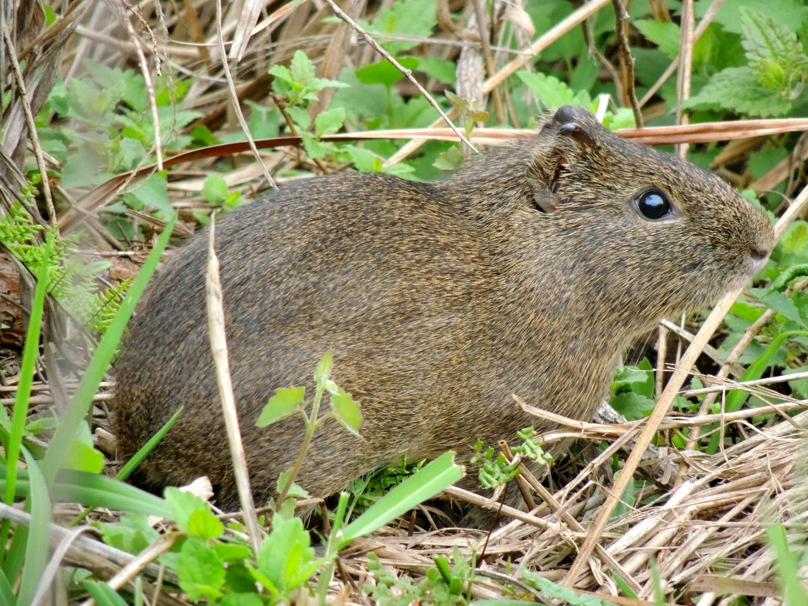
Preá
Cavia aperea
Esse pequeno roedor mede cerca de 25 cm de comprimento. Possui pelagem cinzenta, corpo robusto, patas e orelhas curtas. É aparentado com o porquinho-da-índia. Possui comportamento social, hábitos matutinos e noturnos.
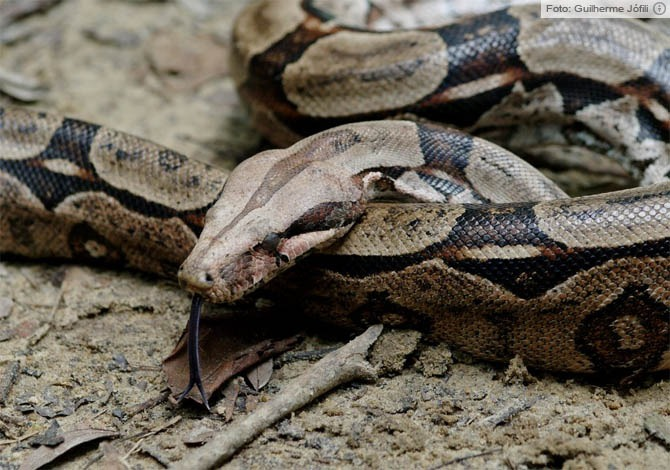
Jiboia-constritora
Boa constrictor
É uma espécie de serpente grande e não peçonhenta. A jiboia é membro da família Boidae e encontrada em regiões tropicais da América do Norte, Central e do Sul.
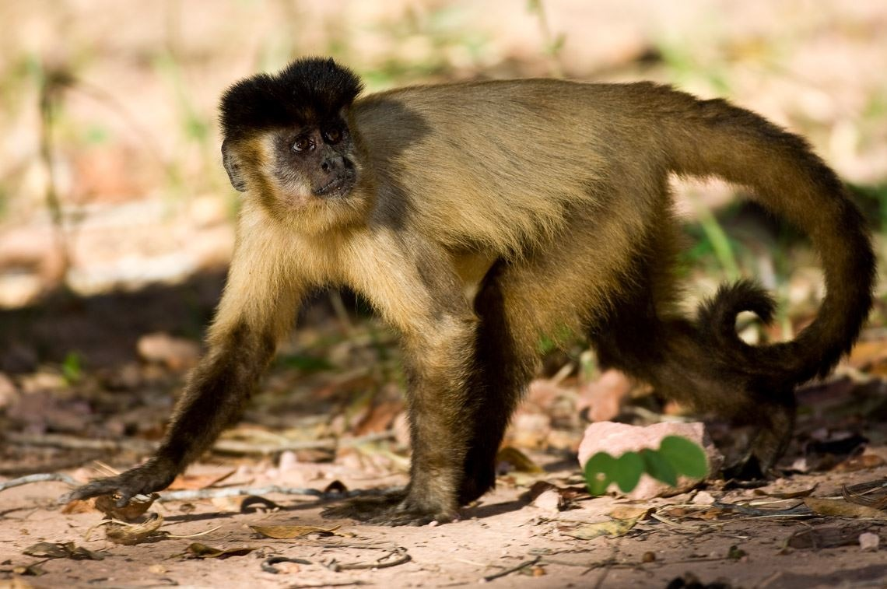
Macaco-prego
Sapajus
São os únicos macacos do Novo Mundo capazes de utilizar ferramentas disponíveis na natureza para facilitar a exploração de recursos, o que pode ser associado ao tamanho maior do cérebro.
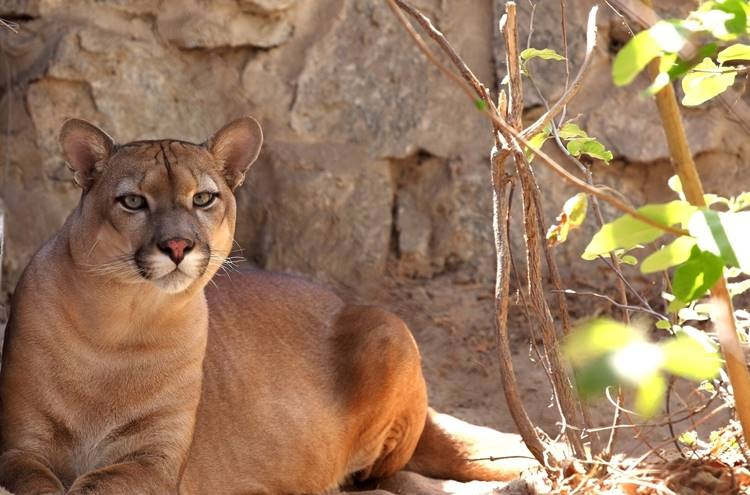
Onça-parda
Puma concolor
Medindo até 155 centímetros de comprimento, é o segundo maior felídeo das Américas. Possui coloração variando do cinzento ao marrom-avermelhado e as mais longas patas traseiras dentre os felinos.
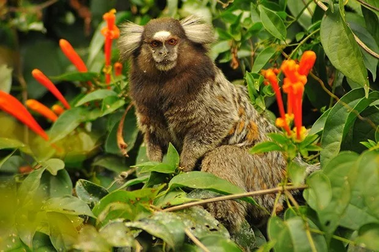
Sagui-de-tufo-branco
Callithrix jacchus
São insetívoros e gomívoros. Para a gomivoria, os incisivos inferiores são longos e estritos, facilitando roer os troncos de árvores gomíferas.